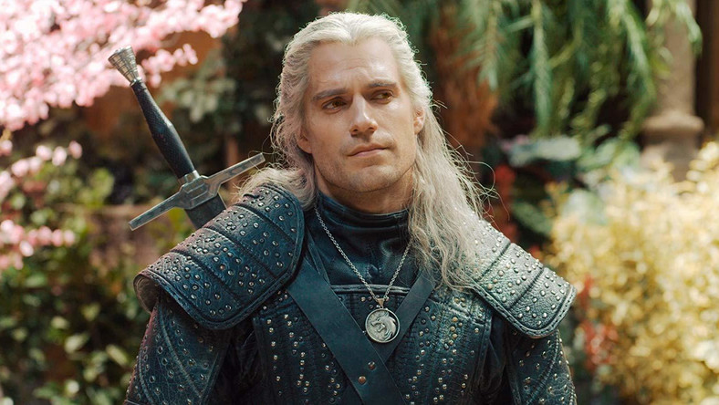

Wiedźmin(ang. The Witcher) – amerykańsko-polski telewizyjny serial fantasy, stworzony przez Lauren S. Hissrich na podstawie książek Andrzeja Sapkowskiego o wiedźminie Geralcie.
Ośmioodcinkowa pierwsza seria udostępniona została w całości 20 grudnia 2019 w serwisie Netflix[2]. Drugi sezon serialu pojawi się 17 grudnia 2021[3].
Netflix zamówił także prequele serialu: film animowany Wiedźmin: Zmora Wilka oraz serial aktorski The Witcher: Blood Origin.

Henry William Dalgliesh Cavill (ur. 5 maja 1983 w Jersey) – brytyjski aktor, model i producent filmowy i telewizyjny.Wczesne lata
Urodził się w Jersey[1] jako jeden z pięciu synów Marianne (z domu Dalgliesh), która pracowała jako sekretarka w banku, i Colina, maklera giełdowego[2] Ma trzech starszych braci: Piersa, Simona i Nicka oraz młodszego Charlesa[3].
Po ukończeniu St. Michael’s Preparatory School w Saint Saviour w Jersey, podjął naukę w szkole okrętowej Stowe School[4] w Buckingham, gdzie występował w szkolnym przedstawieniu Sen nocy letniej Williama Shakespeare’a, musicalu Grease[5] i 40 minut. W szkole Stowe uczył się na profilu historii, języka angielskiego i dramatu, jednak zrezygnował z napisania egzaminów końcowych z tych przedmiotów[6].